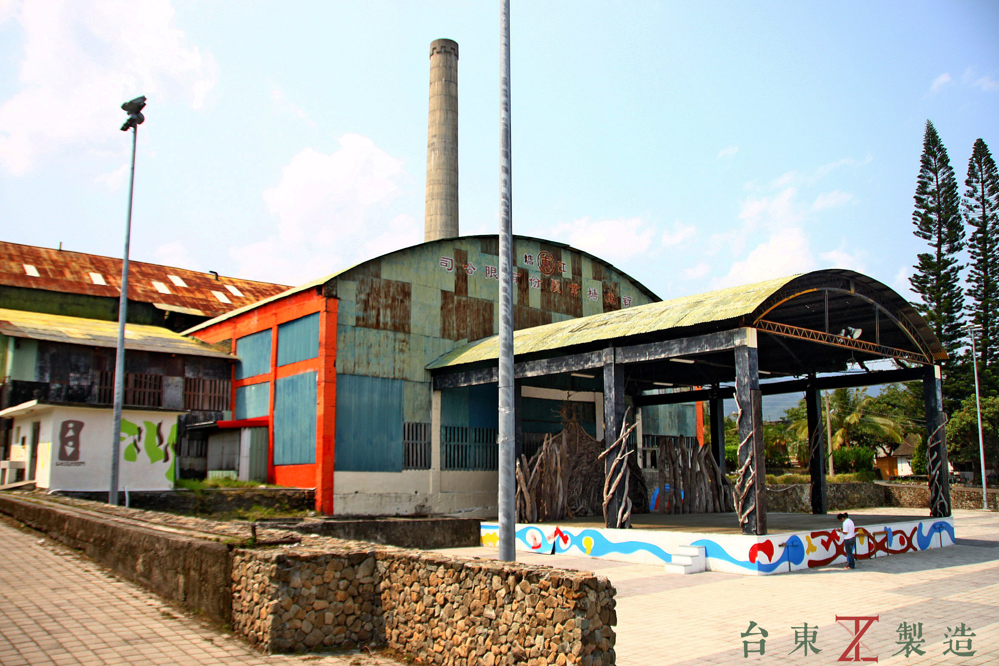
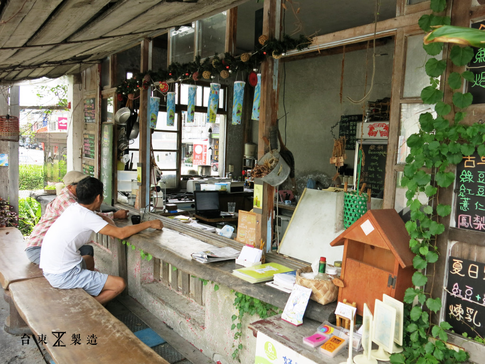

都蘭歷史
都蘭歷史
都蘭村是一個典型的卑南阿美群的阿美族大部落，有著知名的都蘭遺址，主要族群為原住民、閩南人、客家人。
都蘭社區隸屬於東河鄉，位於東海岸南段濱太平洋，北接泰源鄉，南臨鹿野鄉 與都蘭山，西以為關山鎮鄰。都蘭原名都巒。因該地多石，阿美族人闢地耕作 ，將挖掘的石頭砌在旱地旁，拾石砌牆處，阿美族語稱為Etolan，因發音的緣 故，演變為今日的都蘭。
都蘭山目前居住為阿美族人的都蘭部落，同時許多台東的阿美族部落也視都蘭
山為聖山，在當地縣政府與社區居民的推動下，都蘭山也發展著文化觀光產業
，希望藉由傳統文化與山海美景來吸引更多遊客。
都蘭之美
「如果你到都蘭這塊土地流浪，記得讓海帶走你的憂傷，讓山成為你的依靠。」
都蘭之美
人文地景
都蘭社區的地理景觀亦是聞名暇耳，如：水往上流、都蘭鼻等....
社區文化潛藏著豐富的人文景像。如：都蘭糖廠舊址、都蘭文化遺址、都蘭林場、阿美文化工作團、廖勝義木雕工作室……等，均是相當值得探訪的人文資產。



